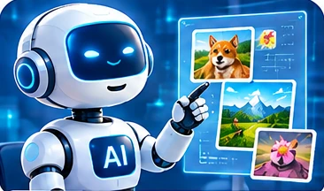

🌻 Ейдос
Наші уроки
Наші уроки
/
6 клас
/ Інформатика
Інформатика · 6 клас
Інтерактивні дослідження про штучний інтелект, цифрову безпеку та життя онлайн.
Як ШІ створює ігрові світи?
→
Фейки та зображення ШІ
→
Надійні паролі та двофакторний захист
→
Соціальна інженерія: пастки шахраїв
→

Як навчається штучний інтелект?
→
Цифровий баланс: онлайн та офлайн
→
ШІ в медицині: помічник лікаря
→
Як працюють чат-боти?
→